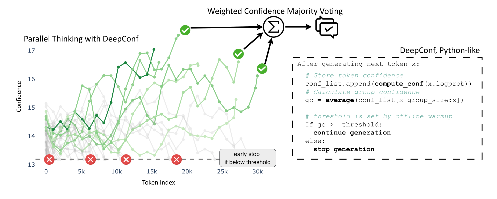
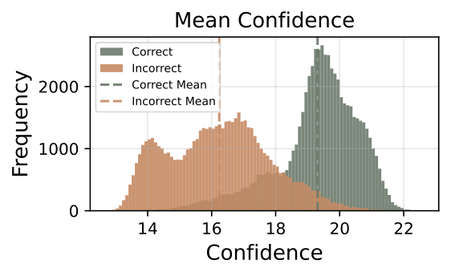
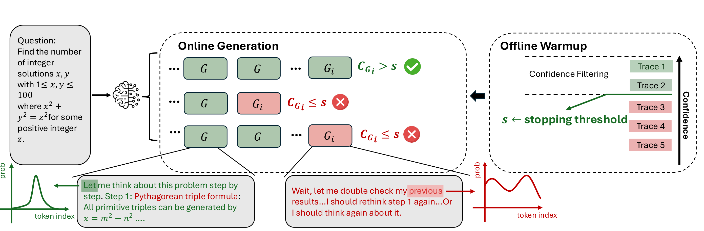
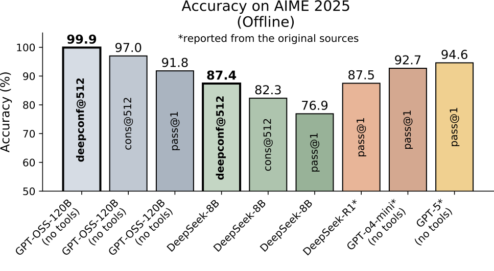
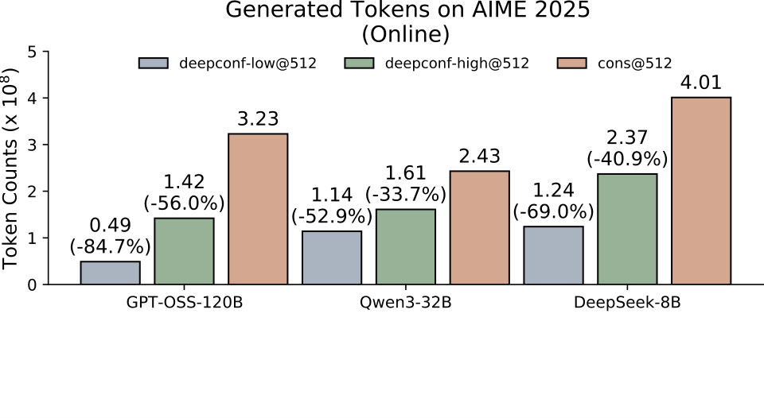
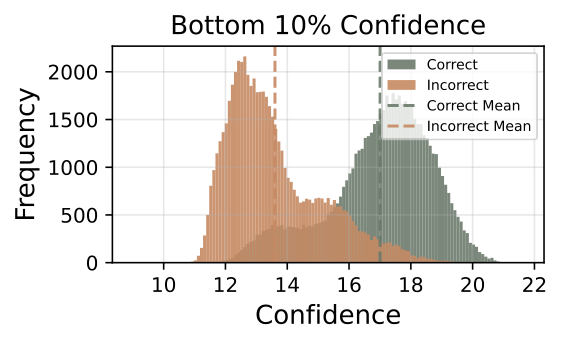

让大模型学会「自知之明」——用置信度信号智能过滤低质量推理轨迹
📄 arXiv Preprint 2025 | arXiv: 2508.15260 | GitHub: facebookresearch/deepconf
DeepConf 是一个在测试时（test-time）运行的推理增强框架，核心思想是利用大语言模型自身的输出概率分布（logprobs）来衡量每条推理轨迹的"置信度"，并据此进行两件关键操作：离线过滤（生成完成后丢弃低置信度轨迹）和在线早停（生成过程中实时终止低置信度轨迹）。整个框架无需额外训练、无需超参调优，可无缝集成到 vLLM 等推理框架中。
图：DeepConf 整体架构 — 从问题输入到置信度度量，再到离线/在线两种模式，最终输出高置信度答案

📄 论文原图 — Figure 1: DeepConf 整体框架与伪代码。上半部分展示 AIME 2025 准确率对比和 Token 节省，下半部分展示并行思考中的置信度早停机制。
基于 top-k token 的负平均 log 概率衡量每个生成步骤的确定性。高置信度意味着模型的概率分布尖锐（peaked），对下一个 token 的预测很确定；低置信度意味着分布平坦，模型在多个选项间犹豫。
使用滑动窗口（默认 2048 tokens）计算局部区域的平均置信度。这是 DeepConf 的关键创新——不依赖全局平均，而是捕捉推理过程中局部的"崩溃"信号，使在线早停成为可能。
不同于标准多数投票的"一人一票"，DeepConf 让高置信度轨迹的投票权重更大。每条轨迹的投票权重等于其置信度分数，确保高质量推理路径对最终答案的影响更大。
在投票前只保留 top-η% 的高置信度轨迹。η=10% 时最激进（仅保留约 51/512 条），精度最高但可能因模型过度自信而失手；η=90% 更保守，保留大部分轨迹但仅去掉最差的。
生成过程中实时监控滑动窗口的 Group Confidence。一旦低于阈值 s，立即终止该轨迹的生成，节省后续所有 token 的计算开销。阈值通过 16 条 warm-up 轨迹自动设定。
在线模式中，每完成一条轨迹后检查当前所有答案的"共识度"。当最高票答案的占比 ≥ τ（默认 0.95）或达到预算上限 K 时，停止采样。这避免了不必要的冗余计算。
大语言模型在推理任务中展现出了令人瞩目的能力，尤其是通过"测试时缩放"（test-time scaling）方法——如自洽性（self-consistency）配合多数投票——可以显著提升推理准确率。然而，这种方法存在两个根本性问题，正是 DeepConf 要解决的痛点。
标准多数投票需要为每个问题采样大量推理轨迹（如 512 条），每条轨迹可能包含数千个 token。论文指出：将 Qwen3-8B 在 AIME 2025 上的 pass@1 准确率从 68% 提升到 82%，需要额外生成 511 条推理轨迹，消耗超过 1 亿个额外 token。这种线性增长的计算成本严重限制了实际部署——每次推理调用都等价于跑 500+ 次完整生成，对延迟和成本都是巨大负担。
更令人困扰的是，简单增加采样数量并不能持续提升性能。随着投票轨迹数量增加，准确率的增长会迅速饱和甚至下降。这是因为标准多数投票对所有轨迹一视同仁——无论是经过深思熟虑的高质量推理，还是混乱的低质量"胡言乱语"，每条轨迹的投票权重都相同。当低质量轨迹数量占优时，它们可能"淹没"正确答案，导致投票结果反而变差。
论文提出了一个关键观察：模型自身的输出概率分布（logprobs）天然携带了推理质量的信号。当模型在推理中"迷失方向"时，其 token 预测的置信度会显著下降——模型在出错时往往"不确定自己在说什么"。这种置信度波动不是随机噪声，而是推理质量的真实指标。DeepConf 的核心思想就是：与其盲目地"多想"，不如学会"有自知之明地想"——用置信度信号动态识别并淘汰低质量推理，同时提升准确率和效率。

📄 论文原图 — Figure 2: 正确 vs 错误推理轨迹在不同置信度度量下的分布差异。可以看到，正确轨迹（蓝色）的置信度分布明显高于错误轨迹（红色），验证了置信度信号的有效性。
上图直观展示了 DeepConf 的理论基础：正确推理轨迹与错误轨迹在置信度分布上存在显著差异。无论是平均置信度、底部 10% 组置信度还是尾部置信度，正确轨迹的分布都系统性偏高。这意味着——我们确实可以通过置信度来区分推理轨迹的质量，而不需要任何外部标注或额外模型。
在深入 DeepConf 的技术细节之前，我们需要理解几个关键的前置概念。这些不是通用的基础知识（如 Transformer 架构），而是与本文方法直接相关的特定技术和术语。
Self-Consistency 是目前最主流的测试时推理增强方法，由 Wang et al. (2023) 提出。其核心流程是：对同一个问题采样多条不同的推理轨迹（通过 temperature > 0 的采样实现），然后通过多数投票选择出现次数最多的最终答案。直觉上，如果多条独立的推理路径都指向同一个答案，那么这个答案更可能是正确的。Self-Consistency 显著提升了推理准确率，但代价是需要生成大量轨迹，计算成本线性增长。DeepConf 正是在 Self-Consistency 的基础上，用置信度信号来"精炼"投票过程。
Test-Time Scaling 是指在推理阶段（而非训练阶段）通过增加计算量来提升模型性能的策略。主要分为两大类：并行思考（Parallel Thinking）——同时采样多条推理轨迹并聚合结果，如 Self-Consistency；串行思考（Sequential Thinking）——在单条轨迹上进行更长时间的推理，如增加思维链长度。DeepConf 属于并行思考范式的优化——它不改变"多路采样"的基本策略，而是让采样过程更智能、更高效。
大语言模型在生成每个 token 时，不仅输出最终选中的 token，还会输出整个词汇表上每个 token 的对数概率（log probabilities, logprobs）。这些 logprobs 反映了模型对该位置预测的"确定程度"：如果模型非常确定，top-1 token 的概率会接近 1，其余 token 的概率极低；如果模型犹豫不决，概率会分散到多个候选 token 上。DeepConf 利用的是 top-k token 的 logprobs（而非仅 top-1），通过计算它们的负平均对数概率来量化模型的不确定性——这就是"Token 置信度"的基础。论文中默认使用 k=20，即考虑 top-20 个候选 token 的 logprobs。
已有工作（如 Kang et al., 2025）提出了"平均轨迹置信度"（Average Trace Confidence），即对整条轨迹所有 token 的置信度取平均。这属于全局置信度度量——它需要等整条轨迹生成完毕才能计算，且会被高置信度区域"拉高"而掩盖局部的推理崩溃。DeepConf 的关键创新在于引入局部置信度度量——通过滑动窗口关注最不自信的推理片段（如底部 10% 的组置信度或最后 2048 个 token 的尾部置信度），既能更精准地识别推理崩溃，又能在生成过程中实时计算，实现早停。
vLLM 是当前最流行的高性能 LLM 推理服务框架之一，以 PagedAttention 技术实现高效的 KV cache 管理。DeepConf 的在线早停功能被直接实现在 vLLM 的推理引擎中——通过在采样循环中嵌入置信度检查逻辑，当滑动窗口的组置信度低于阈值时，将当前请求标记为"停止生成"。这种深度集成使得 DeepConf 的早停机制不会引入额外的调度开销，实现真正的"零成本"质量过滤。
DeepConf 的方法分为三个紧密衔接的层次：首先定义 Token 级的置信度度量，然后将其聚合为轨迹级的置信度指标，最后基于这些指标实现离线过滤和在线早停两种推理增强模式。下面逐层展开讲解。
Token 置信度是整个 DeepConf 框架的原子度量单元。对于模型在第 i 个位置生成的 token，DeepConf 不仅仅看选中 token 的概率，而是利用 top-k 个候选 token 的 logprobs 来衡量模型的整体确定性。具体公式如下：
直觉解释：这个公式计算的是 top-k 候选 token 的平均负对数概率。当模型的概率分布很"尖锐"（即对某个 token 非常确定）时，top-k 个 token 的概率之和较高，负对数概率之和较小，因此 Ci 值较高——代表高置信度。反之，当模型犹豫不决时，概率分散在多个 token 上，Ci 值较低。论文中默认 k=20，即考虑 top-20 个候选 token，这使得度量不仅关注"最可能的 token"，还考虑了"候选集的整体确定性"。
图：Token 置信度对比 — 高置信度时概率分布尖锐（左），低置信度时概率分散（右）
Token 级置信度需要聚合为轨迹级指标才能评估整条推理轨迹的质量。DeepConf 提出了三种轨迹级置信度度量，从全局到局部逐步聚焦：
图：三种轨迹级置信度度量对比 — 全局平均（左）、底部10%组置信度（中）、尾部置信度（右），从全局到局部逐步聚焦推理崩溃信号
组置信度是连接 Token 级和轨迹级的关键桥梁。它使用一个固定大小的滑动窗口（默认 group size = 2048 tokens），计算当前窗口内所有 token 置信度的平均值：
直觉解释：想象你在阅读一个长篇推理过程，如果其中连续 2048 个 token 的平均置信度都很低，那就意味着在这段相当长的区间内，模型一直在"瞎猜"——这极可能表示推理已经走偏。Group Confidence 的滑动窗口设计使得我们可以在生成过程中实时计算（每生成一个新 token，窗口滑动一位），而不必等到整条轨迹完成。这是实现在线早停的数学基础。
Lowest Group Confidence 是 Bottom-10% 方法的在线版本——它取所有滑动窗口组置信度中的最小值作为轨迹的质量指标。在在线模式下，一旦当前的 Group Confidence 低于阈值 s，生成立即终止。
离线模式适用于"先全部生成、后处理筛选"的场景。完整流程包含三步：
Step 1 — 生成与置信度计算：采样 K 条完整的推理轨迹，计算每条轨迹的置信度分数（可用 Avg / Bottom-10% / Tail 任一度量）。
Step 2 — 置信度过滤：按置信度排序，只保留 top-η% 的轨迹。η=10% 表示仅保留置信度最高的约 10% 轨迹（如 K=512 时保留约 51 条）；η=90% 则保留绝大部分轨迹，仅去掉最差的 10%。
Step 3 — 置信度加权多数投票：对过滤后的轨迹集合，不是简单地"一人一票"，而是按置信度加权：
直觉解释：如果答案 A 被 3 条高置信度轨迹（C≈18）支持，而答案 B 被 5 条低置信度轨迹（C≈10）支持，那么加权后 A 的总票数 = 3×18 = 54，B 的总票数 = 5×10 = 50，A 胜出——尽管支持 B 的轨迹数量更多，但 A 有更强的"质量背书"。
在线模式是 DeepConf 的核心实用创新——它不需要等所有轨迹生成完毕，而是在生成过程中实时决策。流程如下：
Warm-up 阶段：先生成 Ninit=16 条轨迹，用它们的 Lowest Group Confidence 确定早停阈值 s。具体地，取 top-η% warm-up 轨迹中的最低置信度作为阈值——η=10% 时阈值较严格（只容忍极高置信度），η=90% 时阈值较宽松。
在线采样阶段：逐条生成新轨迹。每生成一个 token，实时更新滑动窗口的 Group Confidence。一旦低于阈值 s，立即终止该轨迹（early stop）。完成一条轨迹后，检查所有已完成轨迹的答案共识度：
直觉解释：τ=0.95 意味着当某个答案已经获得了 95% 以上的加权投票时，继续采样不太可能改变结果，因此提前结束。这就像选举中的"提前宣布获胜"——当领先优势已经不可逆转时，不必等待所有选票统计完毕。
论文定义了两种在线变体：DeepConf-low（η=10%）使用激进的过滤阈值，只保留极高置信度的轨迹，Token 节省最多（43-85%）但偶尔可能因模型过度自信而损失准确率；DeepConf-high（η=90%）使用保守阈值，保留大部分轨迹，Token 节省较少（18-59%）但准确率更稳定。实际应用中可以根据场景的容错度选择。
DeepConf 的创新不在于发明全新的技术组件，而在于对已有信号（logprobs）的巧妙运用和系统化整合。以下深入解析三个核心创新点。
已有工作使用"平均轨迹置信度"作为质量指标，这相当于对整条推理轨迹做"体检总评"——各项指标取平均，看似综合实则模糊。DeepConf 的关键洞察是：推理崩溃是局部的，不是全局的。一条轨迹可能大部分时间推理正确（高置信度），但在某个关键步骤犯了错（低置信度），全局平均会被高值拉高而掩盖这个致命错误。
Bottom-10% Group Confidence 就像体检中的"最弱项指标"——不管你其他指标多好，只要某一项严重不达标，就标记为高风险。Tail Confidence 则关注"收尾质量"——推理过程可能前半段很好，但最后得出结论时犹豫了，说明结论可能不可靠。这两种局部度量都比全局平均更敏锐地捕捉推理中的问题信号。
图：全局平均 vs 局部度量 — 全局平均被高值拉高掩盖崩溃（左），局部度量精准定位最弱信号（右）
离线过滤虽然有效，但本质上还是"先浪费算力生成垃圾，再扔掉"——低质量轨迹的完整生成成本已经付出。DeepConf 的在线早停将质量控制在生成过程中实时执行，相当于把"事后审查"升级为"实时拦截"。一旦滑动窗口的 Group Confidence 低于阈值，生成立即终止，后续所有 token 的计算全部节省。
这个设计的关键在于：置信度崩溃通常不是在最后才出现的——推理走偏时，模型会持续表现出不确定（在错误的基础上继续推理只会越推越不确定），因此 Group Confidence 的下降往往是持续性的，而不是偶发的。这意味着我们不需要等整条轨迹结束才能判断质量——"崩溃的苗头"早在生成过程中就已经暴露了。
DeepConf 不需要任何额外的模型训练、微调或超参数搜索。它的置信度信号直接来自模型自身的输出分布（logprobs），这些信号在任何经过标准训练的 LLM 上都天然可用。阈值 s 通过 16 条 warm-up 轨迹自动确定，无需手动设置。整个方法可以作为一个"推理增强插件"集成到任何现有的 LLM 服务框架中——论文展示了在 vLLM 中的实现，仅需约 30 行代码修改。
这种"零成本"设计哲学在工程上有重大意义：你不需要重新训练模型、不需要额外的标注数据、不需要复杂的部署流程——只需要在推理服务中启用 logprobs 输出并添加置信度检查逻辑，就可以立即获得准确率提升和 Token 节省的双重收益。
DeepConf 没有传统意义上的"训练"阶段——它是一个纯推理时方法。因此这里我们分析两种推理模式（离线和在线）的完整数据流。
图：离线模式完整数据流 — 从问题输入到最终答案的五个步骤
图：在线模式数据流与时间轴 — Warm-up 设阈值 → 在线循环实时早停 → 共识达成后停止采样

📄 论文原图 — 在线模式示意图：展示并行思考过程中，低置信度轨迹被提前终止，高置信度轨迹完成生成后参与加权投票。
本节深入解析 DeepConf 中几个关键的技术设计决策和实现细节，这些细节虽不是核心方法论，但对理解和正确使用 DeepConf 至关重要。
一个自然的问题是：为什么不直接用 top-1 token 的概率作为置信度，而要计算 top-k 的负平均 logprobs？原因有三：
更丰富的信号：top-1 概率只反映了"最可能选项"的确定性，但无法区分"第二选项也很可能"和"第二选项极不可能"的情况。top-k 度量考虑了整个候选集的分布形态，提供了更全面的不确定性画像。
与熵的一致性：论文证明了 Token 置信度 Ci 实际上是 token 预测分布熵的上界（相差一个常数），因此它携带了与熵类似的信息量，但计算更简单（只需 top-k logprobs，无需遍历整个词汇表）。
计算效率：在实际推理中，获取 top-20 logprobs 的开销很小（vLLM 等框架原生支持），而遍历整个词汇表计算完整熵则代价高昂。
Group Confidence 的滑动窗口大小（group size）是一个关键超参数。论文选择 2048 tokens 的原因如下：
与推理步骤对齐：典型的数学推理步骤（如解方程的一个阶段）大约包含数百到数千个 token。2048 的窗口大小足以覆盖一个完整的推理步骤，从而检测到步骤级别的崩溃。
平衡灵敏度与噪声：窗口太小（如 128）会导致置信度波动过于频繁，产生大量误报；窗口太大（如 8192）则失去了局部性优势，退化为全局平均。2048 是一个合理的折中——论文的消融实验也验证了这一点。
计算便捷：2048 是 2 的幂次，在 GPU 计算中具有天然的内存对齐优势。
阈值 s 的确定仅依赖 16 条 warm-up 轨迹，这看起来很少，但论文的消融实验表明这已经足够。原因在于：
统计稳定性：16 条轨迹的置信度分布已经能够提供合理的阈值估计——因为置信度分数的方差在轨迹间并不大，少量的样本就能捕获其统计特征（均值和分位数）。
效率考虑：warm-up 轨迹的生成成本是"必须付出的代价"——无论结果如何，这些轨迹都要参与后续投票。因此 warm-up 数量不宜过大，16 条是一个低开销的起点。
自校准特性：阈值 s 是相对于当前问题自身的 warm-up 分布设定的（取 top-η% 分位数），这意味着它是"自适应"的——不同问题的阈值可能不同，但都在各自的上下文中是合理的。
τ 控制了"何时认为答案已经足够确定而停止采样"。τ=0.95 意味着当某个答案获得 95% 以上的加权投票时就停止。论文指出：
τ 过低（如 0.8）：会导致过早停止，可能在答案尚未稳定时就做出决定，牺牲准确率。
τ 过高（如 0.99）：几乎等价于不使用共识停止，退化到纯预算模式，浪费 Token。
τ=0.95 是一个经验上的甜蜜点——在大多数情况下，95% 的共识已经意味着结果不太可能逆转，同时还能节省大量采样预算。
DeepConf 在 vLLM 中的实现非常轻量，核心修改仅涉及三个文件、约 30 行代码：
# vllm/v1/engine/output_processor.py — 在 decode 循环中插入早停检查 if req_state.logprobs_processor.check_conf_stop(): finish_reason = FinishReason.STOP stop_reason = f"<gconf< {req_state.logprobs_processor.conf_threshold}>" # logprobs_processor.py — 置信度滑动窗口更新 if self.conf_list is not None: if len(logprobs) > 1: new_conf = -sum(logprobs[1:]) / len(logprobs[1:]) else: new_conf = 0.0 self.conf_list.append(new_conf) # 滑动窗口更新 if len(self.conf_group_list) < self.conf_group_size: self.conf_group_list.append(new_conf) self.conf_grouped += new_conf else: self.conf_grouped -= self.conf_group_list.popleft() self.conf_group_list.append(new_conf) self.conf_grouped += new_conf
关键设计：置信度使用 deque(maxlen=window_size) 实现滑动窗口，每步更新是 O(1) 复杂度——弹出最老的值、推入新值、维护累加和。当窗口平均低于阈值时，check_conf_stop() 返回 True，触发停止。整个过程的计算开销极低，不影响推理吞吐量。
DeepConf 在 5 个推理基准上、3-5 个不同规模模型上进行了全面评估。以下从离线评估、在线评估和消融实验三个维度展开分析。
离线评估在 K=512 的投票预算下，比较多种置信度度量+过滤策略与标准多数投票的效果。
| 模型 | 数据集 | Pass@1 | Cons@512 | DeepConf-low (η=10%) | DeepConf-high (η=90%) |
|---|---|---|---|---|---|
| DeepSeek-8B | AIME24 | 68.0% | 83.0% | 86.7% | 86.7% |
| AIME25 | 76.9% | 82.3% | 87.4% | 81.3% | |
| BRUMO25 | 80.0% | 93.2% | 93.3% | 93.3% | |
| HMMT25 | 58.1% | 69.6% | 83.9% | 69.9% | |
| GPQA-D | 62.8% | 72.5% | 74.0% | 72.8% | |
| Qwen3-32B | AIME24 | 80.6% | 85.3% | 90.8% | 86.8% |
| AIME25 | 71.7% | 80.1% | 80.2% | 80.1% | |
| BRUMO25 | 78.0% | 93.3% | 91.2% | 93.3% | |
| HMMT25 | 51.9% | 63.3% | 62.9% | 63.4% | |
| GPQA-D | 68.9% | 72.2% | 72.5% | 72.8% | |
| GPT-OSS-120B | AIME24 | 91.9% | 96.7% | 97.4% | 96.7% |
| AIME25 | 91.8% | 97.0% | 99.9% | 97.8% | |
| BRUMO25 | 75.6% | 86.7% | 89.4% | 89.9% | |
| HMMT25 | 78.9% | 92.9% | 88.9% | 92.9% |
表：离线评估结果（K=512），绿色高亮为每组最优结果。GPT-OSS-120B 在 AIME 2025 上达到 99.9%。
1. 置信度过滤+加权投票全面超越标准多数投票：在几乎所有设置下，DeepConf 都优于 Cons@512，提升幅度从 +0.1% 到 +14.3% 不等。
2. η=10% 激进过滤带来最大增益：DeepConf-low（仅保留约 51 条最高置信度轨迹）在多数场景下准确率最高，如 DeepSeek-8B AIME25 从 82.3% 跃升至 87.4%（+5.1%）。
3. 模型过度自信的风险：η=10% 偶尔会因模型过度自信而失手——如 GPT-OSS-120B HMMT25 从 92.9% 降至 88.9%，此时 η=90% 更安全。
4. 局部度量优于全局度量：Bottom-10% 和 Tail 置信度在多数情况下优于 Avg Trace Conf，验证了"聚焦局部崩溃"的设计理念。

📄 论文原图 — AIME 2025 准确率对比：DeepConf@512 在不同模型上均显著优于 Cons@512 和 Pass@1。
在线评估的核心问题是：在节省 Token 的同时，能否保持甚至提升准确率？
| 模型 | 数据集 | Cons@512 Token / Acc | DeepConf-high Token(节省) / Acc | DeepConf-low Token(节省) / Acc |
|---|---|---|---|---|
| DeepSeek-8B | AIME24 | 3.55B / 86.7% | 1.45B (-59%) / 86.7% | 0.78B (-78%) / 92.5% |
| AIME25 | 4.01B / 82.3% | 2.37B (-41%) / 81.4% | 1.24B (-69%) / 86.4% | |
| BRUMO25 | 3.56B / 93.3% | 2.17B (-39%) / 93.3% | 1.07B (-70%) / 93.3% | |
| HMMT25 | 4.49B / 69.8% | 3.43B (-24%) / 70.0% | 1.60B (-64%) / 77.6% | |
| Qwen3-32B | AIME24 | 2.00B / 84.8% | 0.88B (-56%) / 86.4% | 0.66B (-67%) / 89.5% |
| AIME25 | 2.43B / 80.1% | 1.61B (-34%) / 80.2% | 1.14B (-53%) / 80.2% | |
| BRUMO25 | 2.17B / 93.3% | 1.37B (-37%) / 93.3% | 0.96B (-56%) / 92.4% | |
| HMMT25 | 2.76B / 63.4% | 2.24B (-19%) / 63.6% | 1.55B (-44%) / 64.5% | |
| GPT-OSS-120B | AIME24 | 2.66B / 96.7% | 1.20B (-55%) / 96.7% | 0.53B (-80%) / 97.0% |
| AIME25 | 3.23B / 97.1% | 1.42B (-56%) / 97.0% | 0.49B (-85%) / 97.9% | |
| BRUMO25 | 2.68B / 83.8% | 1.81B (-33%) / 84.0% | 0.73B (-73%) / 83.4% | |
| HMMT25 | 4.09B / 92.8% | 2.78B (-32%) / 93.0% | 0.97B (-76%) / 92.0% |
表：在线评估结果（K=512）— Token 生成量与准确率。加粗为显著提升项。

📄 论文原图 — GPT-OSS-120B 在线模式下的 Token 生成量对比。DeepConf-low 在 AIME 2025 上节省 84.7% 的 Token。
1. Token 大幅节省：DeepConf-low 节省 43-85% Token，DeepConf-high 节省 18-59% Token。最大节省出现在 GPT-OSS-120B AIME25：85% 的 Token 被节省。
2. 准确率不降反升：在多数场景下，DeepConf 不仅节省 Token，还提升了准确率。最惊人的是 DeepSeek-8B AIME24：Token 减少 78%，准确率反而从 86.7% 升至 92.5%（+5.8%）。
3. 高低端权衡：DeepConf-low 在数学推理任务（AIME/HMMT）上表现优异，但在某些场景（如 Qwen3-32B BRUMO25）可能因过度自信导致准确率微降。DeepConf-high 更稳健，适合风险敏感场景。
论文系统测试了 η 从 10% 到 90% 的效果。核心结论：
趋势明确：更激进的过滤（更小的 η）在大多数情况下带来更高的准确率。例如 DeepSeek-8B AIME24：Maj=86.7%, Top90%=87.2%, Top50%=88.9%, Top10%=93.3%。
存在最优点：但 η 不是越小越好。某些数据集上 Top25% 或 Top50% 反而优于 Top10%，说明最优过滤比例取决于任务特性。
过度自信陷阱：当模型在错误答案上表现得很"自信"时，激进过滤可能保留这些"自信的错误"轨迹，导致性能下降。
论文测试了 Ninit 从 4 到 64 的效果。结果显示：
4 条太少：阈值估计不稳定，导致早停过于激进或过于保守。
16 条足够：在准确率和 Token 节省之间取得了最佳平衡。
32/64 条：进一步提升有限，但增加了 warm-up 阶段的计算成本。16 条是推荐的默认值。
论文对比了 Average Trace Conf、Bottom-10% Group Conf 和 Tail Conf 三种度量在在线模式中的表现。核心发现是 Lowest Group Confidence（即 Bottom-10% 的在线版本）在准确率和 Token 节省之间取得了最佳平衡，因此被选为在线模式的默认度量。Avg Trace Conf 无法支持在线早停（需要完整轨迹），Tail Conf 虽支持在线使用但信号不够精准。

📄 论文原图 — Figure 5: 使用 Lowest Group Confidence 过滤的离线准确率（DeepSeek-8B）。不同投票预算下 η=10% 和 η=90% 的效果。
DeepConf 的每个设计决策背后都有深刻的洞察。本节从宏观角度总结其设计的精妙之处——这些是论文中没有显式总结，但贯穿全文的设计哲学。
判断推理轨迹质量的一种直觉方法是训练一个外部"裁判模型"来评估，但这需要额外的模型、训练数据和推理开销。DeepConf 的精妙之处在于：模型在生成每个 token 时，已经"知道"自己有多确定——logprobs 就是它的"自知之明"。与其引入外部裁判，不如直接倾听模型自己的声音。这不仅零成本，而且信号天然与生成质量相关——因为同一个模型在同一个推理过程中的不确定，就是推理出错的最好指示器。
Self-Consistency 的哲学是"多想几遍，投票决定"，但忽略了"想得差不如不想"这个简单事实。DeepConf 实现了从"多想"（brute-force parallel thinking）到"想得聪明"（confidence-guided smart thinking）的范式转换——不是简单地增加采样数量，而是确保每一条被计入的推理轨迹都达到了足够的"自信"水平。这就像从"全民投票"进化为"有资格的选民投票"——不是所有人都能投票，只有经过质量验证的推理才能参与决策。
Bottom-10% Group Confidence 只关注推理轨迹中"最弱的一环"，看似是一种极端的度量，实则蕴含了深刻洞察：推理是链式过程，一个环节出错，后续所有步骤都建立在错误基础上。因此，整条轨迹的质量由其最弱环节决定——木桶效应。关注最弱的局部信号，反而能最准确地评估全局质量。这是"局部到全局"推理的优雅实例。
DeepConf 不使用固定的置信度阈值来判断轨迹的好坏——不同问题、不同模型、甚至不同采样温度下，"好的置信度"范围可能完全不同。通过 warm-up 阶段自适应地确定阈值 s，DeepConf 让每个问题都有自己的"及格线"。这种相对标准而非绝对标准的设计，使得方法在不同模型和任务间具有极强的泛化能力。
DeepConf 的 Token 节省来自两个独立机制的叠加：早停省掉了低质量轨迹后续 token 的生成成本；共识停止省掉了达成共识后继续采样的冗余成本。前者是"单条轨迹级别"的节省，后者是"全局采样级别"的节省。两者正交互补——即使所有轨迹都没有触发早停，共识停止仍然可以节省 Token；即使共识一直未达成，早停仍然在逐条节省。这种双重保险设计确保了在各种场景下都有可观的效率提升。
DeepConf 的根本假设是"高置信度 = 高质量"，但这个假设并不总是成立。模型可能在错误答案上表现得很"自信"——这种现象被称为"过度自信"（overconfidence）。论文也坦诚地指出了这一点：GPT-OSS-120B 在 HMMT25 上使用 η=10% 时，准确率从 92.9% 降至 88.9%，正是因为模型对某些错误推理过度自信，激进过滤反而保留了这些错误轨迹。这是所有基于置信度的方法的共同挑战——如何区分"真正的自信"和"盲目的自信"。论文建议使用 η=90% 的保守策略来缓解此问题，但更深层的解决方案仍有待探索。
DeepConf 的官方实现在 facebookresearch/deepconf，基于 vLLM 推理框架构建。以下介绍其安装和使用方式。
# 克隆仓库 git clone https://github.com/facebookresearch/deepconf.git cd deepconf # 安装依赖（需要 Python 3.10+） pip install -r requirements.txt pip install -e . # DeepConf 依赖 vLLM 作为推理后端 pip install vllm
deepconf/ ├── deepconf/ # 核心代码包 │ ├── __init__.py │ ├── conf_metrics.py # 置信度度量实现（Avg/Bot10/Tail/Lowest） │ ├── voting.py # 置信度加权投票 + 过滤 │ ├── online.py # 在线模式（早停 + 共识停止） │ └── utils.py # 工具函数 ├── examples/ # 示例代码 │ ├── offline_eval.py # 离线评估示例 │ └── online_eval.py # 在线评估示例 ├── images/ # 图片资源 ├── requirements.txt # Python 依赖 ├── setup.py # 安装打包脚本 └── README.md # 项目文档
from deepconf import ConfidenceMetrics, ConfidenceVoting # Step 1: 采样 K 条轨迹（使用 vLLM 或其他框架） # traces: List[dict]，每个包含 "text" 和 "logprobs" traces = model.generate(question, n=512, temperature=0.7) # Step 2: 计算轨迹级置信度 metrics = ConfidenceMetrics(metric="bottom_10", group_size=2048) conf_scores = [metrics.compute(t["logprobs"]) for t in traces] # Step 3: 置信度过滤 + 加权投票 voter = ConfidenceVoting(eta=10) # eta=10 → DeepConf-low answer = voter.vote(traces, conf_scores) print(f"Final answer: {answer}")
from deepconf import OnlineDeepConf # 初始化在线 DeepConf runner = OnlineDeepConf( model_name="Qwen/Qwen3-8B", n_init=16, # warm-up 轨迹数 eta=10, # 过滤比例 (10=激进, 90=保守) window_size=2048, # 滑动窗口大小 consensus_tau=0.95, # 共识停止阈值 budget_K=512, # 最大采样预算 ) # 运行推理 result = runner.run(question="Find the value of x such that...") print(f"Answer: {result['answer']}") print(f"Tokens used: {result['total_tokens']}") print(f"Token savings: {result['savings_pct']}%")
DeepConf 也提供了 vLLM 的原生集成方案，只需在请求中添加几个参数即可启用早停功能：
# vLLM 请求中启用 DeepConf 早停 response = client.completions.create( model="Qwen/Qwen3-8B", prompt=question, n=512, temperature=0.7, max_tokens=8192, logprobs=20, # 必须启用 logprobs extra_args={ "enable_conf": True, # 启用置信度早停 "window_size": 2048, # 滑动窗口大小 "threshold": 17, # 置信度阈值（由 warm-up 确定） } ) # 早停的轨迹会在 stop_reason 中标记 for choice in response.choices: if "<gconf<" in choice.finish_reason: print("Trace early-stopped due to low confidence")
| 参数 | 默认值 | 说明 |
|---|---|---|
K | 512 | 最大采样轨迹数（投票预算） |
Ninit | 16 | Warm-up 轨迹数量，用于设定阈值 |
η | 10 或 90 | 过滤比例：10=激进(DeepConf-low)，90=保守(DeepConf-high) |
window_size | 2048 | Group Confidence 滑动窗口大小 |
τ | 0.95 | 共识停止阈值 |
k | 20 | Token 置信度使用的 top-k 候选数 |
temperature | 0.6-1.0 | 采样温度，使用模型推荐值 |